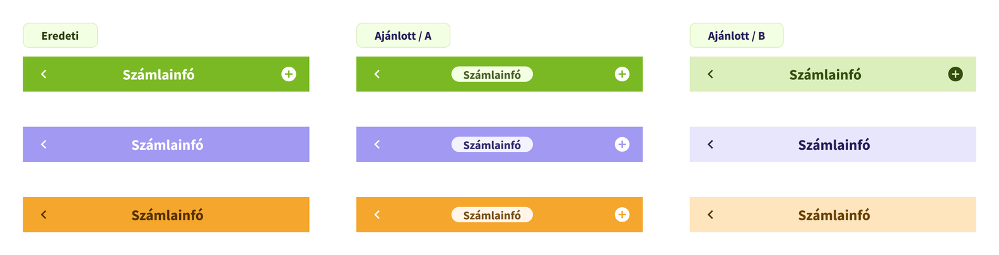
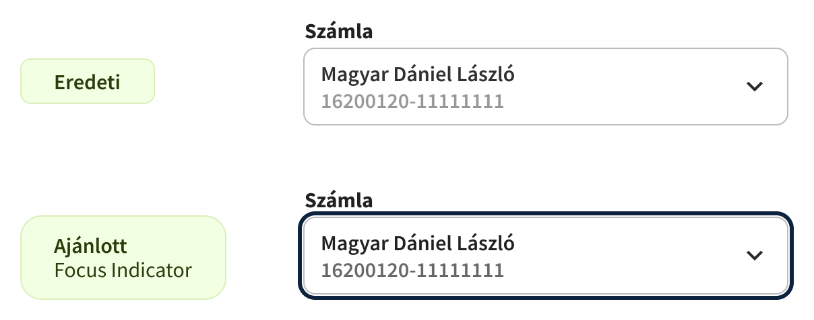
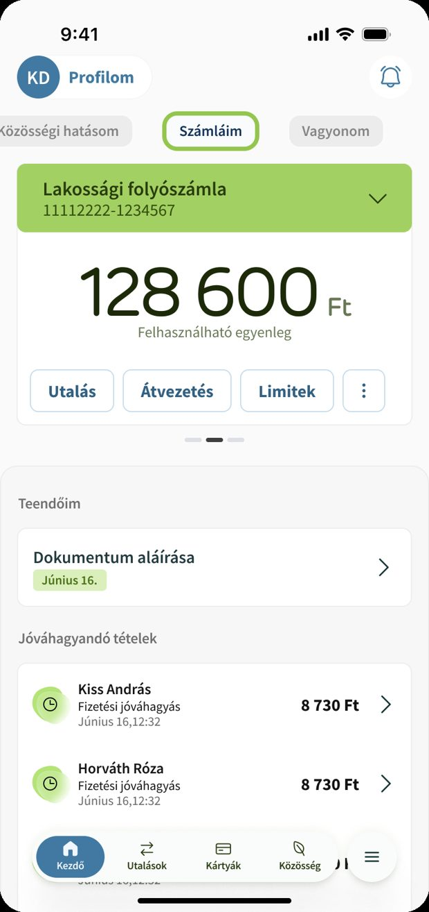
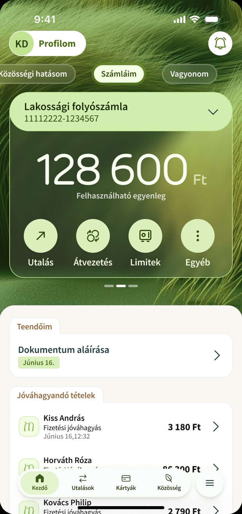

A MagNet Bank design systemjének átvilágítása — a vizsgálati szempontoktól a konkrét javaslatokig és a roadmapig.
A rendszer állapota számokban: minden megállapítás súlyossági szintet és érintett területeket kap.
Azok a rétegek és megoldások, amelyek nem igényelnek szerkezeti újratervezést.
Konkrét megoldási javaslatok, időtávval és üzleti hatással együtt.
Ezekre biztonsággal lehet építeni — nem igényelnek szerkezeti újratervezést.
A brand- és tematikus háttérszínekre helyezett tartalom kontrasztja nem minden esetben megfelelő — különösen a navigációs elemeknél és a címszövegnél.


A javaslatok többsége a következetességről és a finomhangolásról szól — nem újratervezésről.
A brand designnak és az accessibility standardoknak való megfelelésnek egyszerre kell megvalósulnia.


Minden felmerülő pontot rögzítünk, és visszajelzünk róla, hova kerül.